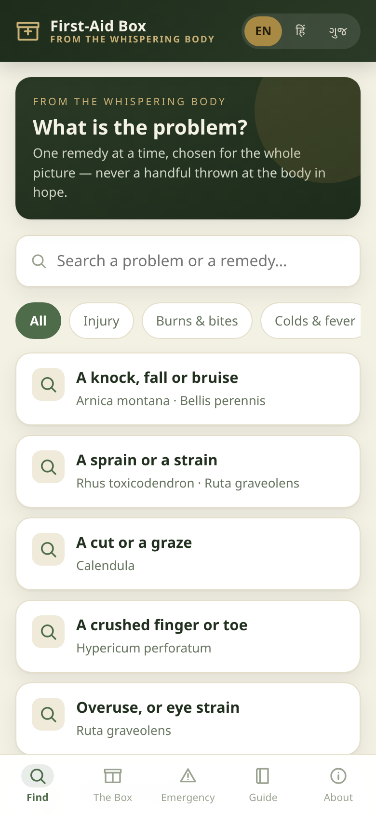
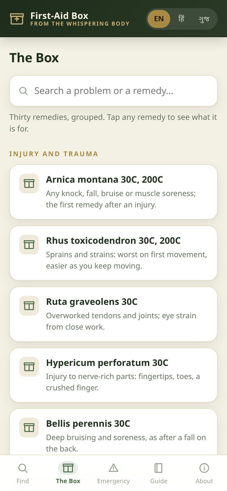
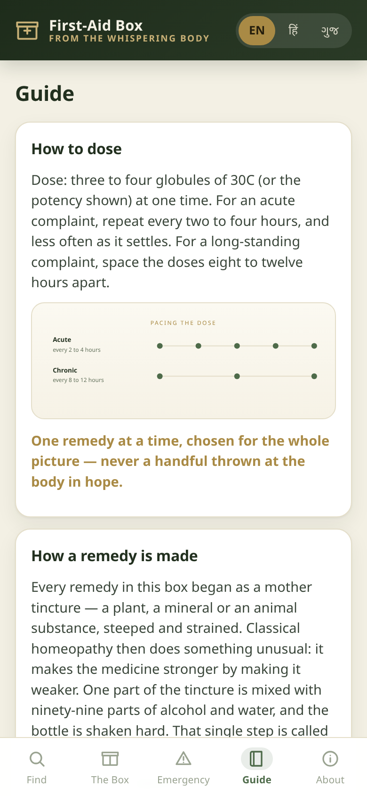

A free, offline companion app to The Whispering Body by Dr. Sohil Momin. It holds 30 commonly used homeopathic first-aid remedies and helps you match one remedy to the whole picture of a symptom — the same “listen, then match” method the book teaches.
Free & fully offline — nothing to install. The Android .apk is sideload-only (allow installs from unknown sources).
This app is general information about homeopathic first-aid practice — it is not a substitute for professional medical care. It is not a diagnosis or treatment, and it is never a reason to delay conventional medical care. In an emergency, seek conventional medical help first — in India, call 112 or 108.
Structured, scannable and reassuring — like a well-designed emergency reference card. Built from Chapter Seven of the book, and it runs entirely on your device.
Pick the problem in plain language — “a burn or a scald”, “food poisoning” — and see the matching remedy. Search by problem or by remedy name.
All 30 remedies, grouped by kind and searchable. Tap any remedy for what it is for and its keynote — the one detail that points to it.
The signs that mean get medical help now, on a clear red panel with a one-tap call button — so the right action is never buried.
How to dose · how a remedy is made (mother tincture → 1C → 30C → globules) · how to carry and handle the box · how to use it. With hand-drawn SVG diagrams.
The whole interface and content in English · हिन्दी · ગુજરાતી — switch with one tap.
Installs to your home screen and runs without a connection. No account, no sign-in, no internet needed once it is open.
The book’s method is simple: notice, name the detail that changes the picture, match one remedy, then watch the response. The app walks you through the same loop.
Start from what is actually happening — a burn, a fall, a fever coming on.
The detail that changes everything: better from cold, worse on first movement, worse from touch.
The finder narrows 30 remedies down to the one that fits the whole picture — with its keynote.
Note what changes. If it does not help — or anything frightens you — seek medical care.
Arnica montana · Rhus toxicodendron · Ruta graveolens · Hypericum perforatum · Bellis perennis
Calendula · Cantharis · Apis mellifica · Ledum palustre · Urtica urens · Hepar sulphuris · Silicea
Aconite · Belladonna · Ferrum phosphoricum · Allium cepa · Chamomilla · Ipecac
Nux vomica · Arsenicum album · Colocynthis · Robinia · Arg. nit · Veratrum album
Glonine · Sanguinaria · Bryonia alba · Ignatia
Thuja · Nitric acid
A single web app with four tabs — Find, The Box, Emergency and the Guide — designed to be read at a glance on a phone.



It takes a minute. After that it opens like an app — and keeps working with no connection.
Yes. The app is free to use on your own devices. The content inside it, however, is copyrighted — a licence is required to reuse the app, its code or its content in another project.
Yes. It is a single web app with no account and no tracking. Once it is open (and especially once it is added to your home screen) it runs without a connection.
No. It gives general information about homeopathic first-aid practice. It is not a substitute for diagnosis or treatment by a qualified clinician, and it is never a reason to delay conventional medical care.
In an emergency, seek conventional medical help first — in India, call 112 or 108.
Thirty commonly used homeopathic first-aid remedies, grouped into six areas: injury and trauma; cuts, grazes, burns and bites; colds, fever and children; stomach and digestion; head and nerves; and warts and slow healing. Each has what it is for and a keynote.
English, हिन्दी (Hindi) and ગુજરાતી (Gujarati) — the whole interface and content, switchable with one tap.
Not without permission. The content is the copyrighted work of Dr. Sohil Momin, drawn from the book The Whispering Body. Free to use; a licence is required to reuse it, and attribution is required in derivative works. See the LICENSE.
It is built from Chapter Seven of the book The Whispering Body: An Alternate Explanation and Storyteller’s Guide to Homeopathy by Dr. Sohil Momin. This repository contains only the companion app, not the book.